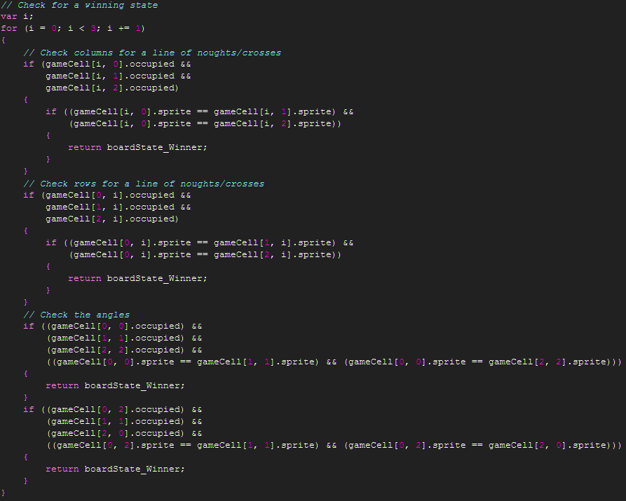

Tutorial
Page 6 of 7
Scripts : Building the Game
We're now going to handle the main bulk of the game scripts. All the scripts in this section are added to the GameBoard
section of the Scripts hierarchy in the same fashion as previously described.
First we start with the script that initialises the game board:
Note how we're again setting up enumerations to allow us to refer to game settings without using "magic" numbers. Also, pay attention
to the fact that we're creating an objBoardLayout explicitly in code rather than adding the object to the room and
to how we're creating the game cell objects via for loops and storing the grid cells into a 2D array structure. Here we
can also see how the settings stored in the board layout object are used in the code.
This is a fairly lengthy chunk of code and would perhaps be better if the code for setting up the board cells were separated out into
an additional script. It is left up to the discretion of the reader as to whether or not to do this.
Our first script to use the game state enumerations is scrGameUpdate. This script also introduces the idea of a switch
statement. A switch statement is a way of easily selecting the code to execute according to the value of a variable when that
variable can take one of many values. Alternatively we could use an if / else if / else setup, but often a swtich statement is cleaner.
Although the actual actions taken in this script are minimal, the script has been setup with the notion of the game executing
a variety of scripts according to the state the game is in. We will come back to the script scrUpdateAI that is referred to in this code.
Our next script will handle the drawing of the game board. Note that in this script some basic code is implemented to tell the player
whether they won, lost or drew the game and prompt them to click to continue. Improvements to this implementation are left as an exercise for
the reader.
Here we also make use of the instance_find() routine that finds the instance of the objBoardLayout that we created during initialisation.
The second parameter passed into this routine indicates which instance this routine should return in the case where there may be multiple
instances of an object.
To handle player interactions with the game grid we implement the following script, scrMousePressed:
In this code we can see that two key actions occur. The first is to check whether or not the game board is actually waiting
for the user to click the screen to play again and if so react accordingly. Here we make use of the exit keyword, which is used
to leave the script currently executing and is logically equivalent to the Exit this event action.
The second is during the normal course of play where we check to see if the click of the mouse takes place within the area of a
grid cell and if so and that grid location is not occupied then the script scrUseCell() is called:
We have separated out this code into a script of its own since it is used in two places: in this instance where the player has selected
a cell on the board and in the instance where the computer AI has selected a slot on the board. As can be seen, when a location can
be successfully used the game state alters to change whose turn it is.
The code responsible for this change of turn checks the state
of the board after the placement to see if the player or computer's selection has won the game for them or if the board is now full and
a stalemate has been reached and if so changes the game state accordingly.
The script that checks the state of the board, scrCheckGameResult, looks like this:


At first glance this code might look quite complicated, but it is actually quite straightforward, if somewhat verbose, and there is just quite a
bit of checking required to see whether or not any lines of 3 pieces exist and also to see if there are any remaining
grid cells that do not have a piece therein.
At this stage the scripting for the game is fairly complete. In the next section we will move onto the aforementioned scrUpdateAI and
deal with the decision making that the computer undergoes to decide where to place a piece in response to the player's move.
Click on the Next button to go to the next page of the tutorial.